Aphelion 1.0
Text size l
Contents
- Your controls
- Glossary
- First orbit
- Belly flop
- Deploy
- Linger up high
- The long ellipse
- Navigation belt
- Hangs still
- Tilt to the station
- Orbital manoeuvres
- Polar
- Dawn-dusk
- To the Moon
- Burn home
- To Mars
- Home from Mars
Your controls
iPhone, iPad, and Mac show the same buttons. On a Mac the app is the iPad app. Each picture is the real control, at the size it is on the flight screen, and the line beside it is the whole explanation.
The home screen has Career and Sandbox. Sandbox is the free side: Scene, Body, Rocket, and Orbit are menus along the bottom. Each menu shows the choice you have now and opens the full list. Launch, Ride, the path, Close up, Flat, pause, clear, and the time slider stay on that same bar.
Readouts
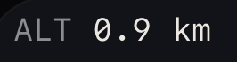
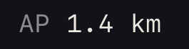
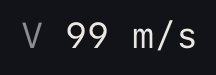
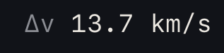
The three steps
Flying
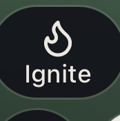
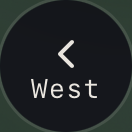
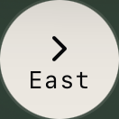
On a Mac, Shift raises the throttle a little, Control lowers it, W or Z sets full, and X cuts. A hand flight does not ease at Max Q for you.
Next sits on a teaching line in the top bar. It shows the next line at once. If you leave it, the lines still move on by themselves.
Time
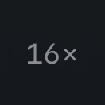
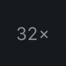
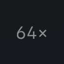
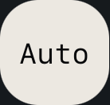
Camera
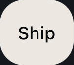
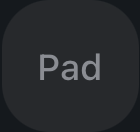
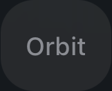
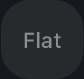
The top row
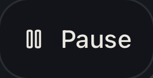
1. First orbit
What you'll learn
A rocket bends east so it falls around Earth instead of back onto it, and it eases the engines where the air pushes hardest.
The idea
An orbit is a repeating path around another body. The path is an ellipse. The near end is perigee and the far end is apogee. Going fast enough sideways means the ground curves away as fast as you fall, so you keep missing Earth.
NASA’s page for grades 5–8 says an orbit is a regular, repeating path, that orbits are ellipses, and that for a satellite of Earth the nearest point is perigee and the farthest is apogee. nasa.gov, What Is an Orbit? (Grades 5–8)
At the equator the ground already moves east. The app multiplies its rotation rate, 7.2921159×10⁻⁵ radians per second, by a 6,371 km Earth, which is 464.6 m/s, and the screen rounds that to 465 m/s E. NASA/JPL lists Earth’s equatorial radius as 6378.137 km and a rotation rate of 7.292115×10⁻⁵ radians per second. Those two multiply to 465.1 m/s, which rounds to the same 465. NASA/JPL Horizons, Earth geophysical properties
Max Q. The air pushes hardest here, so the engines ease off, then push again, so that push stays something the rocket can take. NASA’s STS-133 press kit says the main engines throttle to 316,000 pounds of thrust so dynamic pressure stays below about 580 pounds per square foot, then throttle back up. Normal operating level in a vacuum is 490,847 pounds. 316,000 / 490,847 is the fraction this lesson uses, about 64%. NASA STS-133 press kit (PDF page 71)
When you fly this one yourself, ease the throttle at Max Q. The example and Autopilot do that for you.
Try it now
- The app opens on the home screen: Aphelion, the question mark, the book, and the gear, then Career and Sandbox, and the mission card. A saved career opens there too. The card shows the last mission you opened, or the next one. Open First orbit and press To the pad. The rocket waits on the pad.
- Press Watch the example. Teaching lines in the top bar have Next. Press it to see the next line at once. If you do not, the lines still move on by themselves. Watch the climb. The engines ease, then push again, while the line talks about Max Q. Fuel is still in the booster when it stages.
- When the example finishes, the rocket is back on the pad, at rest. Press Ignite and fly it yourself from the start. The card says to pitch east, or press Autopilot. The strip reads “1 Burn up”, “2 Cut & coast”, and “3 Burn at the top”.
- Go straight up, then tip east. Cut when the screen says CUT NOW, near a 275 km top. Coast.
- At the top, put the nose on the green prograde mark and burn when it says IGNITE NOW. That burn lifts the low end. Leave fuel in the ship.
Wrong and right
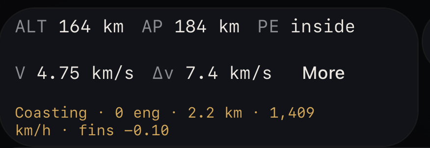
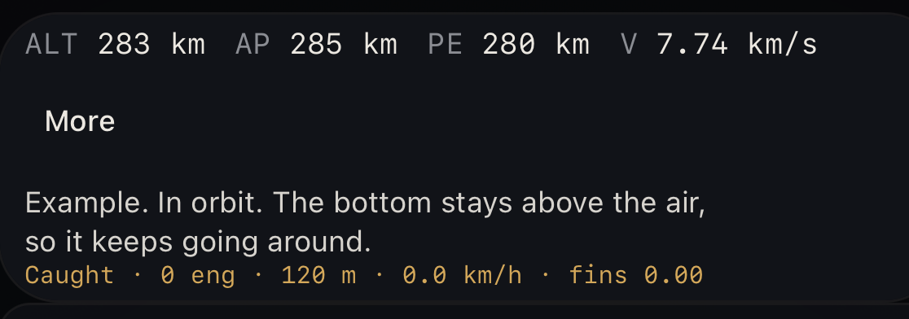
How to get it right
- Go straight up, then tip east. Sideways speed is what keeps you missing the ground.
- Ease the throttle yourself at Max Q. The example does that for you. A hand flight does not.
- Cut when the screen says CUT NOW, near a 275 km top, and coast. Wait until you reach the top (AP).
- At the top, put the nose on the green prograde mark and burn when it says IGNITE NOW. Stop when the bottom has climbed. Leave at least 0.8 km/s in the ship.
Check yourself
Why ease the engines at Max Q instead of pushing at full the whole way up?
Answer: that is where the air pushes hardest. Easing keeps that push at a level the rocket can take, then the engines push again as the air thins. The cited limit is about 580 pounds per square foot.
2. Belly flop
What you'll learn
Coming home, the ship meets the air on its belly, then flips tail-down so the tower can catch it.
The idea
The wide belly, not the nose, takes the wind and the heat. Flaps hold that belly into the wind. The engines stay off while the air does the slowing. Low down they light, flip the tail under the ship, and the arms catch it. This ship has no legs.
SpaceX’s Starship page describes the ship returning, flipping, and the booster returning to be caught. The lesson’s catch is that idea on the tower. SpaceX, Starship
Try it now
- Tap Belly flop, then Come home. The ship is already in the air and waits. Press Watch the example.
- Start the example. Use 4× while it is high, and 1× for the flip. If you pick 1×, the rest of the fall does not run faster than 1×.
- Press My turn. The card says Autopilot flies the belly and the flip. Watch the catch.
- The tower comes into the frame once the ship is low. The arms close. There are no legs.
Wrong and right
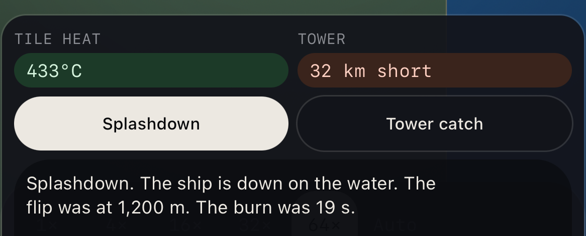
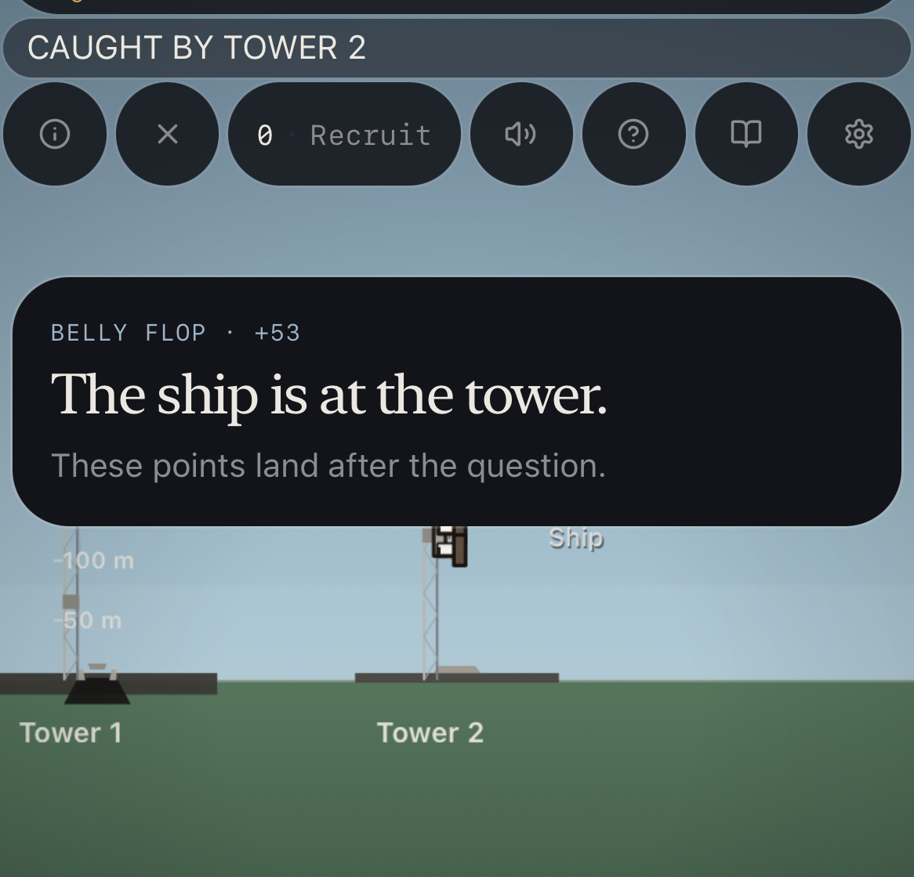
How to get it right
- Watch the example first. Use 4× while it is high, and 1× for the flip.
- Keep the belly toward the wind. Nose up makes more drag. Nose down is the faster, harder fall.
- The engines stay off while the air does the slowing. Flip when the ship is low, tail under the ship.
- The tower arms close. This ship has no legs.
Check yourself
Why does the ship come in sideways instead of nose-first?
Answer: the belly is the broad face. It makes the drag and takes the heat. The engines only light at the end, to flip the tail down for the catch.
3. Deploy
What you'll learn
The same parking orbit can let satellites go, if you still have fuel in the ship when you arrive.
The idea
You park on the same kind of circle as First orbit, engines off, then open the bay. The Starlinks leave one by one and drift apart slowly until they form a line. The count of satellites is the one the game already ships. This page does not change it.
Try it now
- Tap Deploy, then Open the bay. Start the example, or press My turn.
- Park the circle the same way as First orbit. Keep fuel in the ship.
- When the card says to, tap Deploy. The bay opens and the Starlinks leave one by one.
- The Deploy button stays off until the low end is above the air and the engine is off.
Wrong and right
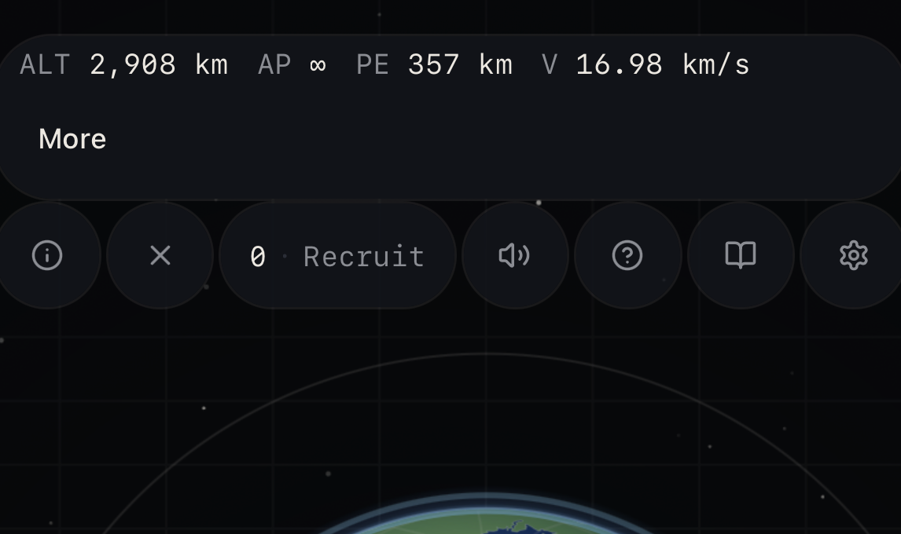
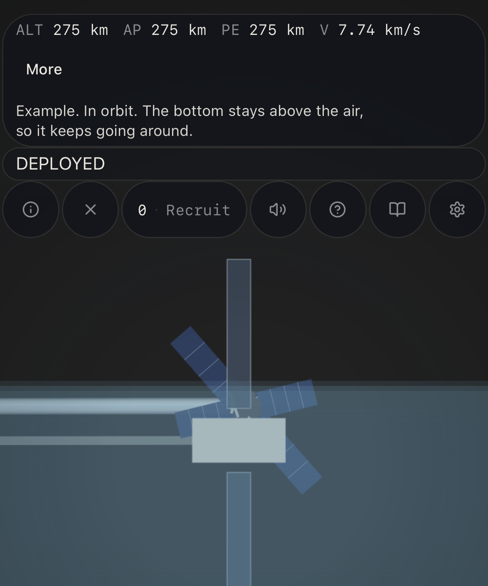
How to get it right
- Park the same kind of circle as First orbit. Both ends need to clear the air, and the ship still needs fuel.
- Cut the engine. Wait. Do not tap Deploy on the way up.
- When the card says you are in orbit, tap Deploy once. The satellites drift apart along the path you already fly.
Check yourself
What has to be true before Deploy does the job?
Answer: the ship is on a closed path with the low end above the air, and you still have fuel in the ship. Then one tap opens the bay.
4. Linger up high
What you'll learn
A long ellipse makes you slow at the far end, so you linger over the north. A forward burn at that top then raises the bottom.
The idea
NASA’s grades page says a comet moves quickly when it is close to the Sun and slowly when it is far away. The same thing happens on a long ellipse around Earth: you are fast at the low end and slow at the high end. The slow part is the linger.
Lower down, air still drags a spacecraft. NASA’s station transition FAQ says the station flies around 415 km, and that at that height its orbital lifetime is roughly one to two years if nobody reboosts it, depending on the Sun. NASA, ISS Transition Plan FAQ
Try it now
- Tap Linger up high, then Ride the linger. You see two rings. Press “Then the ellipse”.
- The picture stops before the low circle, the bottom burn, and the coast. Pick a time, then press Watch, Bottom burn, or Watch path.
- Press My turn. Hold the burn at the bottom. The top climbs. Coast until you are slow over the north. That linger is not the end.
- At the top, nose forward and hold the burn, half before the top and half after. The bottom climbs. Nose back stretches the ellipse and drops the low end. The lesson finishes on a circle at about 39,900 km.
- Up high the line says you are slow over the north, and the ellipse stays.
Wrong and right
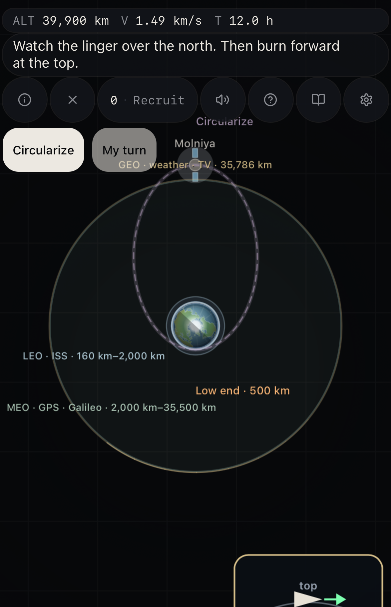
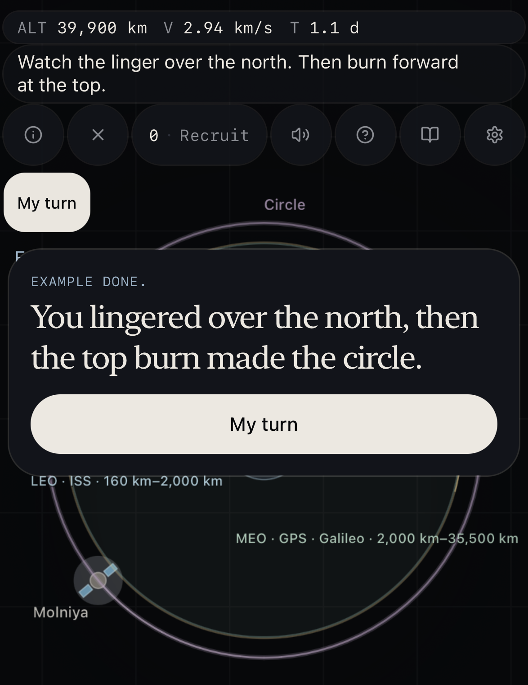
How to get it right
- Hold a forward burn at the bottom. Only the top climbs, over the far north.
- Coast. You are slow up there, so you linger. Choose a time, then watch that coast.
- Wait until you reach the top. Nose forward, and burn half before the top and half after.
- Nose back is the wrong way. The lesson is done when the path is a high circle.
Check yourself
Why does this lesson burn again at the top?
Answer: nose forward there raises the bottom, and the lesson finishes when the path is a circle at about 39,900 km. Nose back does the opposite. A working Molniya satellite often stays on the ellipse, because the linger is the useful part. This lesson flies the next burn so you can see it.
5. The long ellipse
What you'll learn
A forward burn at the low end raises only the high end. A forward burn at the high end raises the low end, until both ends sit on the geostationary ring.
The idea
NASA Earthdata says a platform at 35,786 km has an orbital speed that matches Earth’s rotation, and that one sitting over the equator is geostationary: it stays over the same place. This lesson climbs to that ring on a long ellipse, then rounds it. NASA Earthdata, Orbits
Prograde means forward, along the way you are already going. The green arrow is that direction. Forward at one end of the ellipse raises the other end. The screen labels both ends with their altitudes.
Try it now
- Tap The long ellipse, then Ride the ellipse.
- The picture stops before the low circle, each burn, and the coast. Pick a time, then press Watch, Bottom burn, Watch path, or Top burn. Your pick caps the fast coast.
- Press My turn. Hold the bottom burn. Only the high end rises. Coast. Do not burn in the middle.
- At the high end, burn forward again. The low end rises onto the gold line. The lesson finishes on that circle.
Wrong and right
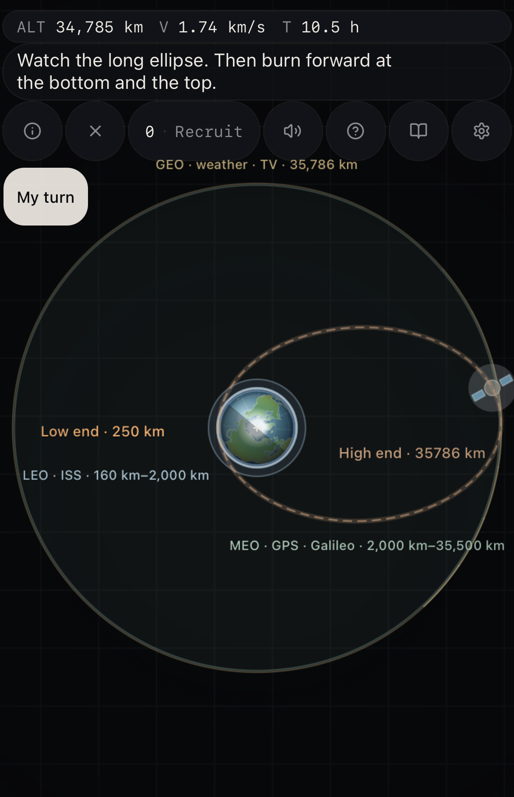
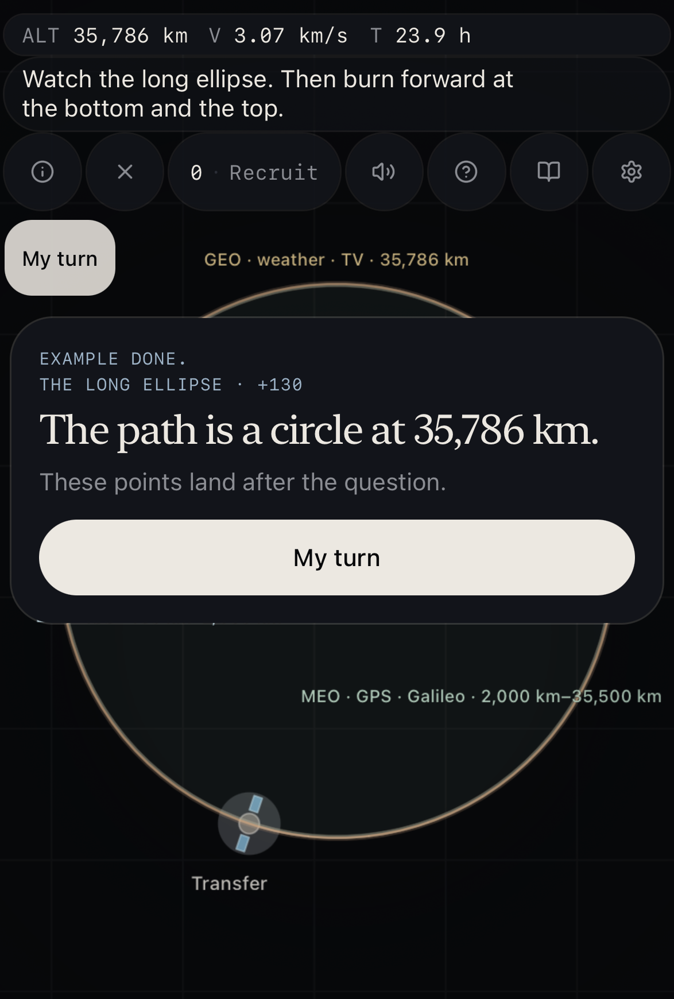
How to get it right
- Burn forward at the low end. Only the high end rises, out to 35,786 km.
- Coast to that slow top. Wait until you are there.
- Burn forward at the top so the low end climbs. Stop when the path is a circle on the geostationary ring.
Check yourself
You are at the low end and you burn forward. Which end moves?
Answer: the high end. The low end stays where you burned. The matching burn at the top lifts the low end.
7. Hangs still
What you'll learn
At 35,786 km over the equator, one lap matches one turn of Earth, so the satellite hangs over one spot.
The idea
NASA/JPL lists Earth’s mean sidereal day as 23.934 hours, which is 23 hours and 56 minutes. That is one turn relative to the stars, not the 24-hour solar day. A satellite that takes that same time, on the equator, stays over one longitude. NASA Earthdata puts that height at 35,786 km. NASA Earthdata, Orbits
The same page draws the bands the lesson uses when they fit: low orbit about 160 to 2,000 km, medium orbit about 2,000 to 35,500 km, and the geostationary line at 35,786 km. Tip the plane and the satellite nods north and south instead of hanging still.
Try it now
- Tap Hangs still, then Ride GEO. The picture starts on a low circle.
- Pick Chemical apogee or Hall thruster before it flies.
- Burn forward at the bottom so the high end rises to 35,786 km. Coast. At the top, burn forward again. The path becomes the gold circle.
- Press My turn when you want to fly an engine yourself. The done line says it hangs on the gold line.
Wrong and right
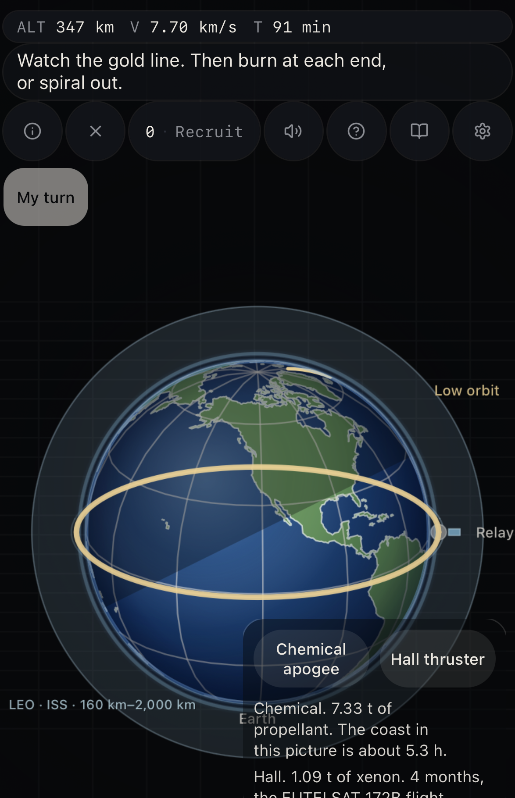
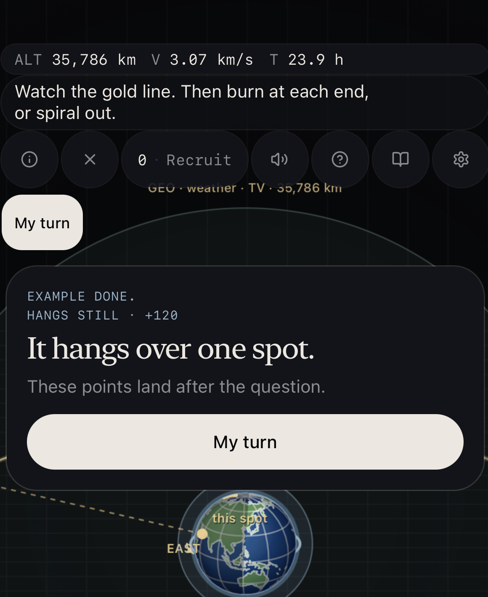
How to get it right
- Stay on the equator. A chemical engine burns forward at the bottom, coasts, then burns forward at the top.
- Wait for the top before the second burn. A late burn leaves the low end short.
- Stop on the gold line. Tip the plane and the satellite nods instead of hanging.
Check yourself
Why does a geostationary satellite not slide across the sky?
Answer: its lap takes the same time Earth takes to turn once, 23 hours 56 minutes, and it sits over the equator. The ground turns with it.
8. Tilt to the station
What you'll learn
The station’s plane is tipped 51.6° from the equator. Launching into that plane saves the fuel a later tilt would cost.
The idea
NASA’s station FAQ says the International Space Station orbits at an inclination of 51.6 degrees, so the farthest north and south it goes is 51.6 degrees of latitude. NASA, International Space Station FAQ
A sideways burn can change the plane later. It costs a lot when you are low and fast. Launching on the station’s heading arrives with fuel left. The screen’s “costly way” starts due east, then does two sideways burns half a lap apart.
Try it now
- Tap Tilt to the station. The example launches on the good heading.
- Press My turn. Choose Watch, Coach, or By hand.
- By hand starts with the compass at 90°. Turn it until the line matches the station heading, then launch.
- When the picture finishes, press Question and tap ISS 51.6°.
Wrong and right
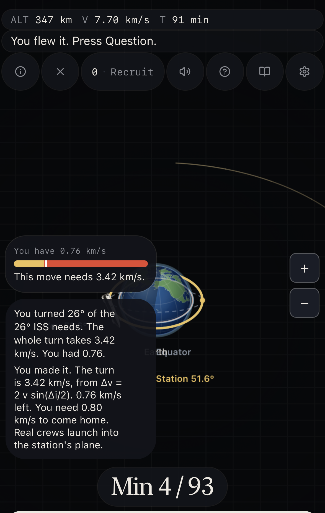
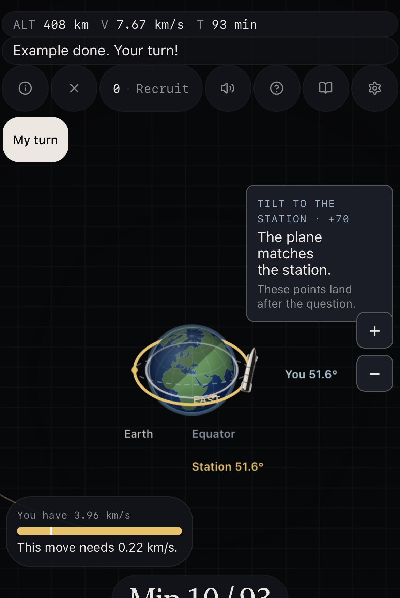
How to get it right
- Read the compass before you light the engines. The station’s plane is the heading the lesson shows.
- Launch on that heading. The tilt is set on the way up.
- A later sideways burn can still tip the plane, and it costs the reserve. The cheap choice is the launch direction.
Check yourself
Why is it cheaper to launch toward 51.6° than to tip the orbit after you are up?
Answer: the plane is set at launch. Changing it later is a sideways burn against a fast ship, and that spends almost all the fuel the lesson is holding for the rest of the flight.
9. Orbital manoeuvres
What you'll learn
Forward and backward move the opposite end of the ellipse. Sideways at a node tilts the plane. A plane change is cheaper when you are slow.
The idea
The far point is apogee and the near point is perigee, as on NASA’s grades page. Burning forward at the near point raises the far point. Burning backward lowers it. Burning forward at the far point raises the near point.
The two places the path crosses the equator are the nodes. A sideways burn there tips the plane. The lesson shows the same tilt costing more at the low, fast end than higher up, where you are slower. Launch into the plane you want.
Try it now
- Tap Orbital manoeuvres, then Fly the burns. The example plays four burns, then a tilt. Fast-forward does not speed this picture.
- Watch forward at the bottom: the high end rises, the low end stays. Then backward: the high end falls.
- Watch forward at the top: the low end rises. Then backward: the low end falls.
- Press My turn. Pick 5°, 10°, or 20°. The sideways burn flies. On the question, tap “Slow, at a node.”
Wrong and right
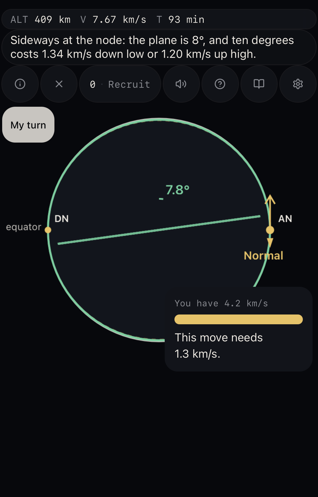
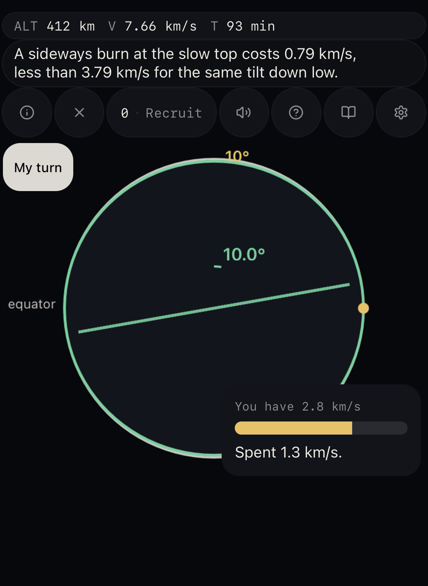
How to get it right
- To change height, burn forward or backward at one end. That burn moves the other end.
- To tilt the plane, burn sideways where the path crosses the equator.
- The cheap tilt is where you are moving slowly. Down low, the same tilt costs much more.
Check yourself
Where is a plane change cheapest?
Answer: slow, at a node. Down low you are fast, so the same tilt costs more.
10. Polar
What you'll learn
A path that goes over both poles looks at a new strip of Earth each lap, because Earth turns underneath a line that stays put.
The idea
NASA Earthdata says a polar-orbiting platform is inclined nearly 90 degrees to the equator and travels from pole to pole as Earth rotates. A south launch from a site such as Vandenberg gets none of the eastward spin along the track, because the heading is across that spin, not along it. NASA Earthdata, Orbits
Try it now
- Tap Polar, then Watch the poles. The compass opens at Vandenberg. Watch launches south.
- Press My turn. By hand starts due east. Turn left and Turn right move the compass by 15°. South is the heading over the pole.
- Launch on that heading. Due east is not over the pole, and the line says so.
- When the picture finishes, press Question and tap Polar.
Wrong and right
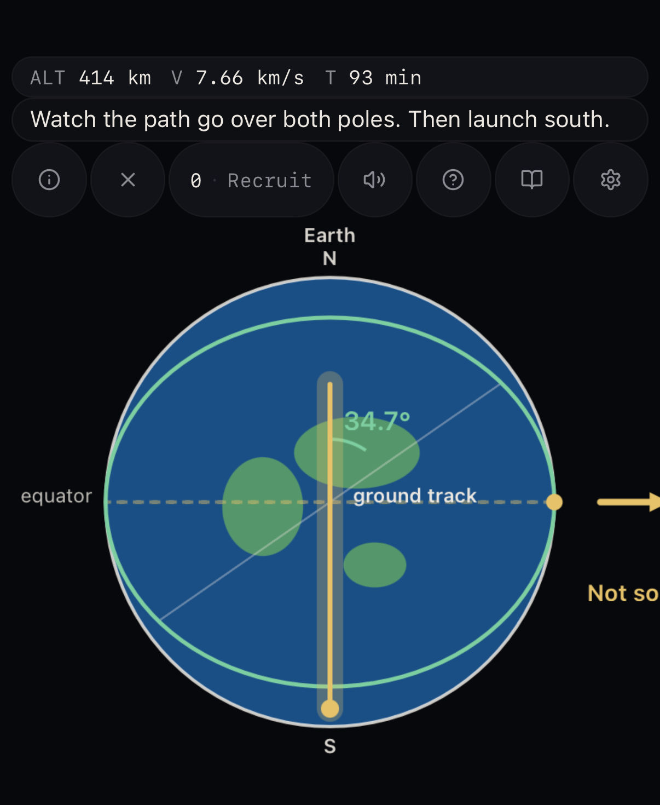
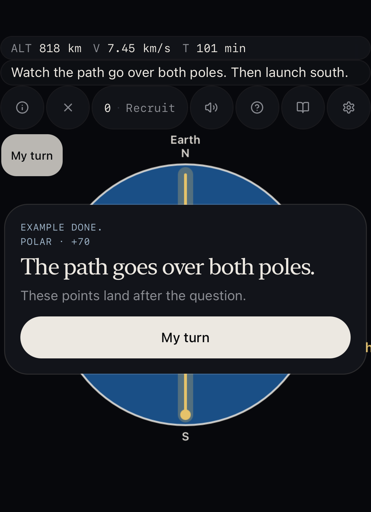
How to get it right
- Launch south from the west-coast pad, into a plane that goes over both poles.
- The line of the path stays put. Earth turns underneath, so the next lap is a new strip.
- Do not spend the fuel turning the plane afterward. The launch direction is the tilt.
Check yourself
Why does the next lap see a different part of Earth?
Answer: the orbit line stays put in space, over both poles. Earth turns underneath it, so the ground has moved by the next pass.
11. Dawn-dusk
What you'll learn
A sun-synchronous tilt, a little past the pole, lets Earth’s bulge walk the plane with the Sun, so each pass sees the same morning or evening light.
The idea
NASA Earthdata describes sun-synchronous polar orbits and gives NASA’s Aqua as an example, about 705 km up. The plane is chosen so it keeps a steady relationship with the Sun. Dawn-dusk means the pass stays on the day-night line. NASA Earthdata, Orbits
Try it now
- Tap Dawn-dusk, then Watch dawn-dusk. The example launches a little past the pole, slightly retrograde.
- Press My turn. By hand starts near 90°. Turn left and Turn right move it by 0.5° until you are near the aim the picture asks for.
- Launch. On the good tilt the line says the plane stays on the day-night line. A wrong tilt walks off the Sun.
- Press Question and tap Sun-sync.
Wrong and right
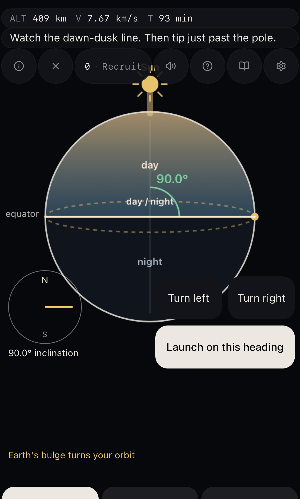
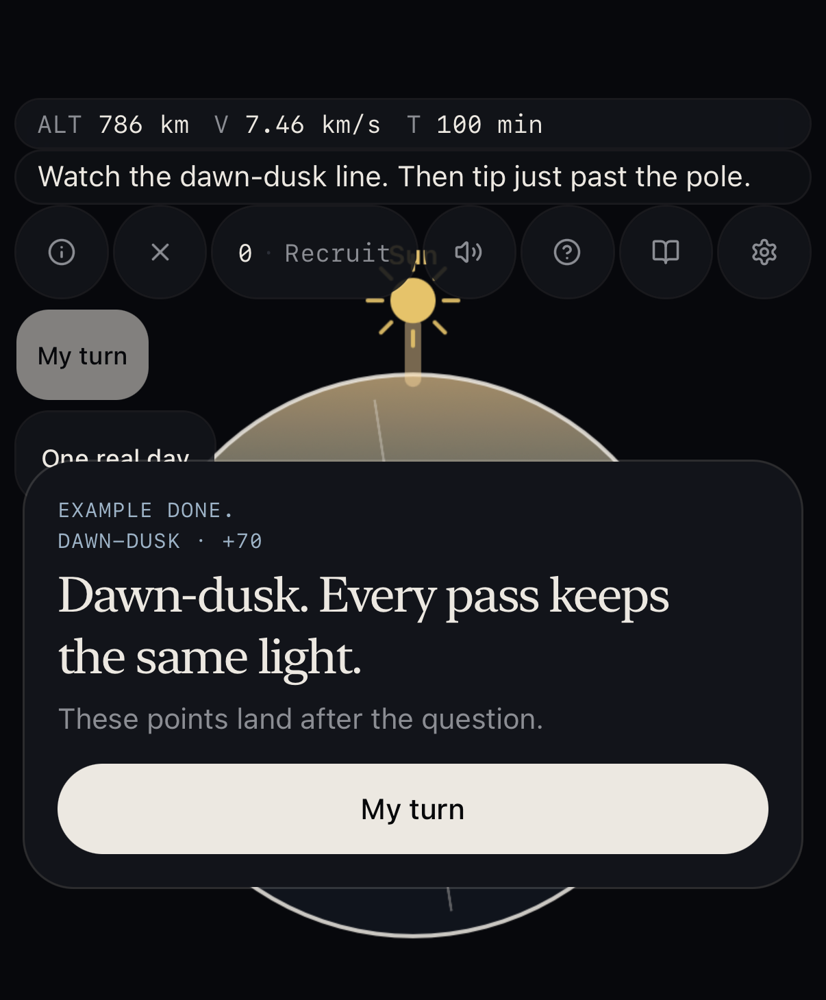
How to get it right
- Watch the plane. It is not quite over the poles.
- The engines do not chase the Sun. Earth’s bulge walks the plane.
- Dawn-dusk keeps the same morning or evening light on every pass.
Check yourself
What keeps a dawn-dusk plane with the Sun after launch?
Answer: Earth’s bulge, not the engine. The tilt is chosen so that walk matches the Sun. The wrong tilt drifts off the day-night line.
12. To the Moon
What you'll learn
A forward burn at Earth raises the far end out to the Moon. A second forward burn at the Moon raises the near end so you travel with the Moon.
The idea
Same rule as the long ellipse. Forward at the near end raises the far end. You then coast, engines off, and the Moon comes to that far end. Forward again raises the near end until you share the Moon’s path around Earth. Orbiting the Moon itself would be a backward burn at the closest pass. This lesson does not ask for that burn.
NASA’s grades page is the ellipse: far point, near point, and a coast between them with no engine. The lesson’s coast is about five days on its own clock.
Try it now
- Tap To the Moon, then Leave Earth. The picture stops before each burn and before the coast.
- Pick a time, then press Earth burn, Watch coast, or Moon burn. Your time caps how fast the coast runs.
- Press My turn. Hold to burn, forward, at Earth. Coast. Hold to burn, forward, at the Moon.
- The steps on screen are “1 · Earth, forward”, “Coast”, and “2 · Moon, forward”.
Wrong and right
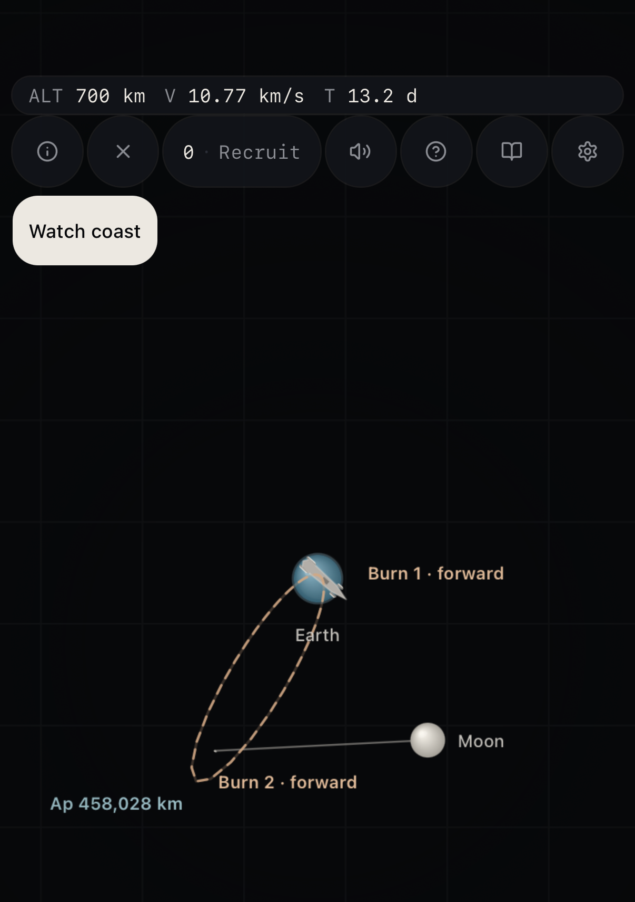
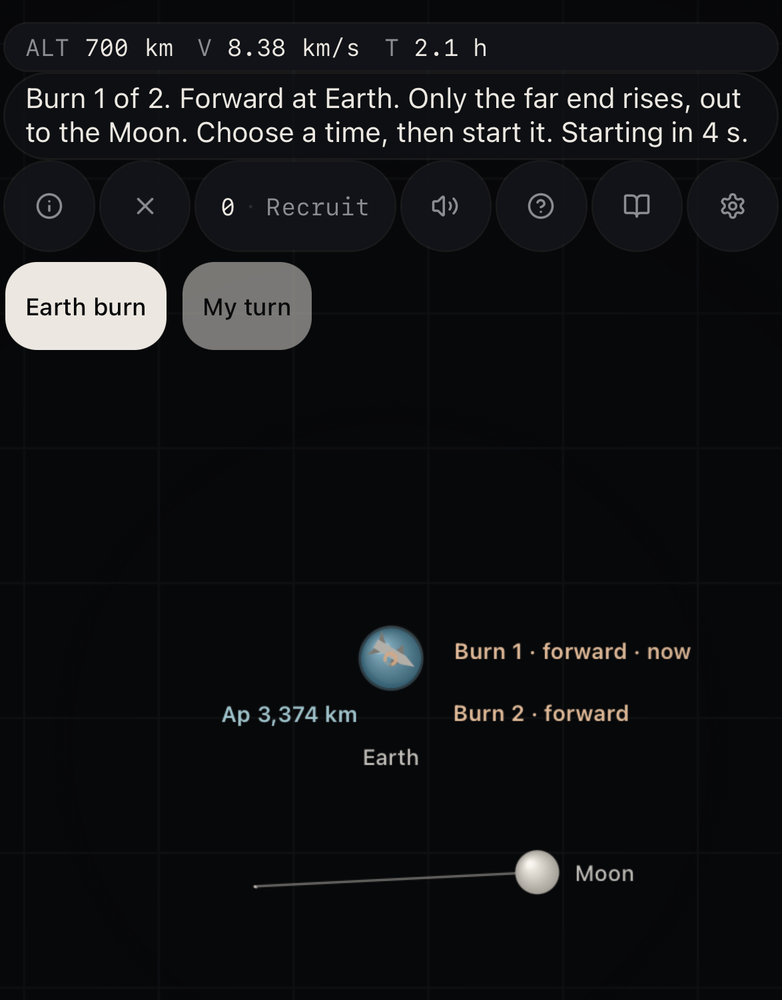
How to get it right
- Burn forward at Earth. Only the far end rises, out to the Moon.
- Coast. There is no burn in the middle. Pointing the nose at the Moon does not do this job.
- At the far end, burn forward so the near end rises and you travel with the Moon.
Check yourself
The lesson ends when you are traveling with the Moon. What burn did you not have to do?
Answer: the backward burn that would drop you into orbit around the Moon itself. This lesson stops on the path that travels with the Moon.
13. Burn home
What you'll learn
Slowing down is the way home. Backward at the Moon drops the near end onto Earth. Backward at Earth drops the far end.
The idea
You are traveling with the Moon, so you point backward, against your motion, and burn. That lowers the near end of the ellipse toward Earth. Coast, engines off. At Earth, backward again drops the far end, and you finish on an oval, not a circle.
Pointing the nose at Earth and thrusting is not the same thing. The burn has to be along your path. The lesson says slowing down is the way home.
Try it now
- Tap Burn home, then Return. Pick a time, then press Slow at Moon, Watch coast, or Slow at Earth.
- Press My turn. Hold the backward burn at the Moon.
- Coast home. The path is already aimed.
- Hold the backward burn at Earth. The far end drops. The lesson ends on that oval.
Wrong and right
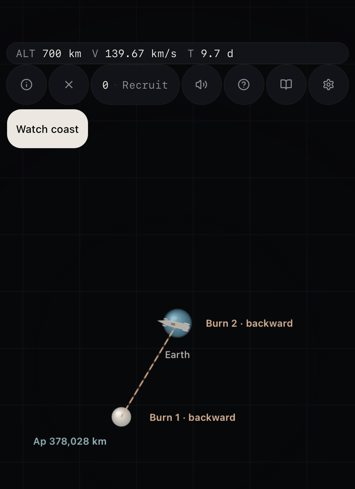
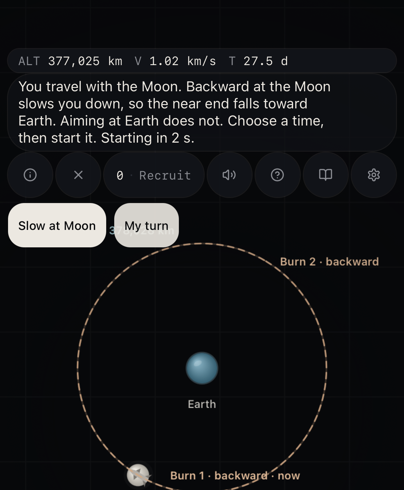
How to get it right
- You start already traveling with the Moon. Nose behind you.
- Burn backward at the Moon so the near end falls toward Earth. Then coast.
- Burn backward at Earth so the far end drops. This lesson stops on that oval, not on a tight circle.
Check yourself
You are at the Moon and you want the near end to fall toward Earth. Which way do you burn?
Answer: backward, against the way you are going. A forward burn would raise the far end. Slowing down drops the near end.
14. To Mars
What you'll learn
The same two forward burns, with the Sun in the middle, raise the far end out to Mars and then the near end so you travel with Mars.
The idea
Forward at Earth raises only the far end, out to where Mars will be. The coast is months, engines off, because the path was set when you left. Forward at Mars raises the near end. A burn in the middle of the coast does not aim the meeting.
NASA’s grades page is the shape again: you leave from the near point, coast the long ellipse, and arrive at the far point. The lesson’s clock calls that coast months.
Try it now
- Tap To Mars, then Leave for Mars. Pick a time, then press Leave Earth, Watch coast, or Arrive at Mars.
- Press My turn. Hold forward at Earth. Only the far end rises.
- Coast for months. Do not burn in the middle.
- Hold forward at Mars. The near end rises and you travel with Mars.
Wrong and right
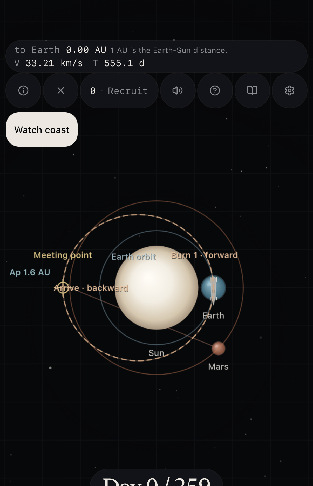
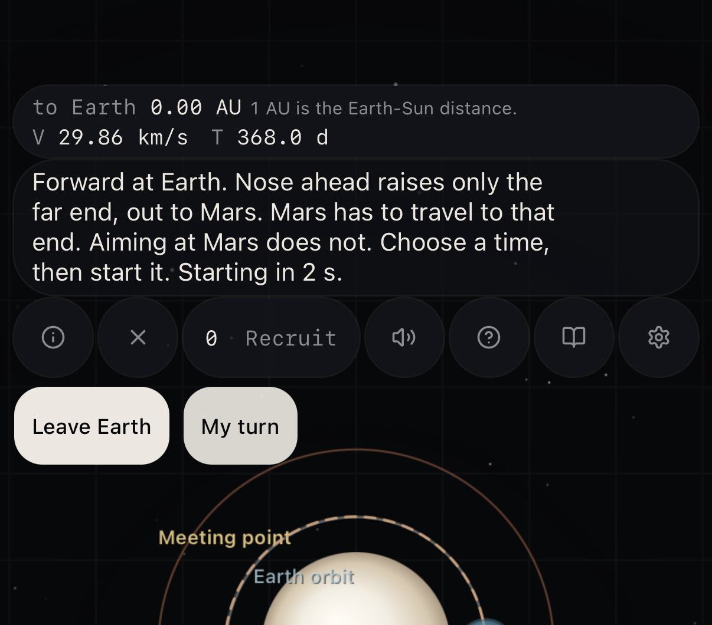
How to get it right
- Burn forward at Earth. The far end rises to the distance Mars orbits the Sun.
- Coast for months. Choose a faster clock if you want to watch it. Do not burn in the middle.
- At Mars, burn forward so the near end rises and you travel with Mars.
Check yourself
Why doesn’t a burn halfway along the coast fix a missed meeting with Mars?
Answer: the far end was set by the burn when you left Earth. The coast is already that ellipse. The arrival burn is at Mars, and it raises the near end.
15. Home from Mars
What you'll learn
Backward at Mars drops the near end onto Earth. Backward at Earth drops the far end, and you share Earth’s year.
The idea
Same homecoming as the Moon, on a bigger ellipse. Slowing at Mars lowers the near end to Earth’s path. Coast for months. Slowing at Earth lowers the far end. You then go around the Sun with Earth. A capture into a low orbit around Earth would be one more backward burn, or a dip into the air. This lesson stops when the second burn has dropped the far end.
Try it now
- Tap Home from Mars, then Come home. On this card, Come home is this lesson, not Belly flop.
- Press My turn. Press Slow at Mars and hold Hold to burn.
- Coast home for months. The button on the coast is Watch coast.
- Press Slow at Earth and hold the backward burn. The lesson ends when that far end has dropped.
Wrong and right
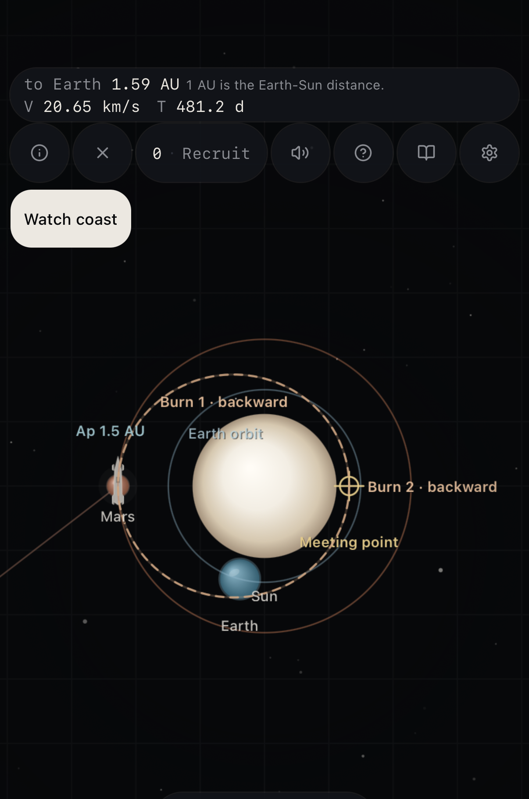
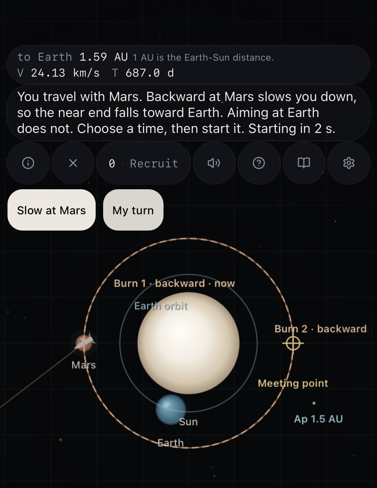
How to get it right
- Burn backward at Mars. The near end drops onto Earth’s distance from the Sun.
- Coast home. The button on the coast is for watching, not for another burn.
- Burn backward at Earth. The far end drops, and you go around the Sun with Earth.
Check yourself
After the burn at Earth, what path are you on?
Answer: you share Earth’s year around the Sun. You are not in a low circle around Earth unless you slow down once more.
Glossary
Written for a teenager. A number is either what this app calculates, or it is from NASA or SpaceX, and the source is named. The screen’s own lesson targets are named as what the screen says.
Altitude, ALT. Height above the ground. The app measures it from a round Earth whose radius is 6,371 km, centre to surface. The Kármán line in this app is 100 km. That is legal space, not a parking orbit.
Velocity, V. How fast you are moving, and which way. The V readout is the speed. Direction is the nose and the green mark.
Orbital speed. The speed of a circle at a given height. The app uses μ = 398,602.5 km³/s² and a 6,371 km Earth, and the circle speed is the square root of μ divided by (6,371 plus the height). At 275 km that is 7.744 km/s. At 408 km it is 7.668 km/s. At 20,200 km it is 3.873 km/s. At 35,786 km it is 3.075 km/s.
Apoapsis, apogee, AP. The high end of an ellipse. NASA’s grades page uses apogee for a satellite of Earth. nasa.gov, What Is an Orbit? (Grades 5–8)
Periapsis, perigee, PE. The low end of that ellipse. If PE is inside the air, the path hits Earth. This app treats 100 km as the edge of space, and First orbit asks for a low end of at least 220 km.
Ellipse. The repeating path. A circle is an ellipse whose two ends match. NASA’s grades page says orbits are ellipses, close and fast, far and slow.
Burn. The engines are on, so the path changes. Forward, along the green prograde mark, raises the other end of the ellipse. Backward, retrograde, lowers the other end.
Coast. The engines are off. The path you already have is the path you keep, until the air or another burn changes it.
Circularise. A forward burn at the high end that raises the low end until the two ends match. First orbit aims that circle near 275 km. The screen accepts a low end of at least 220 km, a high end under 700 km, and the two ends within 120 km of each other.
Δv. The speed change left in the fuel, in km/s. First orbit wants 0.8 km/s still in the ship when the circle is done. Throttle does not change how much Δv the tank holds. It changes how fast you spend it.
Throttle, THR. How hard the engines push, from off to full. The readout is that fraction in percent.
Max Q, dynamic pressure, q. Dynamic pressure is one-half times the air density times the speed squared. The app stores it in kilopascals. Density comes from the US Standard Atmosphere 1976 table in the app. From 100 km up the readout prints VAC. Max Q is where that push is hardest on the way up. NASA’s STS-133 press kit says the main engines throttle to 316,000 pounds of thrust so the push stays below about 580 pounds per square foot, then throttle back up. Normal vacuum thrust is 490,847 pounds. 316,000 / 490,847 is 64.4%, and this app and this page call it about 64%. 580 pounds per square foot is 27.8 kPa in the unit the app already uses. NASA STS-133 press kit (PDF page 71)
Prograde. Forward, the way you are already going. The green mark. A forward burn raises the other end of the ellipse.
Retrograde. Backward, against the way you are going. A backward burn lowers the other end. That is how a deorbit starts.
Deorbit. A backward burn that drops the low end into the air so you can come home. In this app the aim for that low end is 50 km. That 50 km is the lesson’s target, not a NASA number.
Heatshield, TILE HEAT. The tiles on the belly take the heat of the fall. The app’s reference for a windward tile is 1,723 K, which is 1,450°C, on a belly at 60 km and 5.6 km/s. The code cites Chris Hadfield’s 2,600°F and a 2024 thermal analysis, doi:10.34133/space.0281. 2,600°F is 1,427°C. The app uses 1,723 K. The readout is the temperature the tiles are heading toward, and the skin lags behind it.
TWR. Thrust divided by the rocket’s weight, then multiplied by the throttle. Above 1, the engines can lift the rocket off the pad.
Inclination. How far the plane is tipped from the equator. The station button reads 51.6°. The lesson’s value is 51.64°, and the height it uses is 408 km. NASA’s station FAQ states 51.6°. NASA’s station transition FAQ says the station flies around 415 km. NASA, International Space Station FAQ
Geostationary, GEO. 35,786 km over the equator. One lap takes the same time Earth takes to turn relative to the stars, so the satellite hangs over one spot. The app’s period at that height is 23.93 hours, and the orbit line prints 23 h 56 m. NASA Earthdata states 35,786 km. NASA Earthdata, Orbits
Sidereal day. One turn of Earth relative to the stars, 23.934 hours on the NASA/JPL Horizons page this manual already cites. A solar day, noon to noon, is longer.
Navigation belt, MEO. The app draws this belt at about 20,200 km, and the orbit line prints 11 h 58 min and 55°. The app’s circle speed there is 3.873 km/s, and its period formula gives 11.97 hours. NASA Earthdata calls medium Earth orbit the band from about 2,000 km to about 35,500 km. This page does not cite gps.gov. The 20,200 km figure is the height the screen draws.
Low Earth orbit, LEO. NASA Earthdata says about 160 km to about 2,000 km. First orbit’s parking circle is near 275 km, inside that band.
Polar. Over the north pole and then the south. The app’s polar line is 817 km, 90°, and it prints 101 min. The circle speed from the app’s formula at 817 km is 7.447 km/s.
Sun-synchronous, dawn-dusk. A little past polar, so Earth’s bulge walks the plane about one degree a day. The app’s dawn-dusk line prints 786 km, 100.6 min, and 98.6°. The launch line in the lesson prints 98.5°. That pair is the game’s value. NASA Earthdata’s Aqua example is about 705 km, which is a different orbit.
Ground speed. At the equator the app’s 7.2921159×10⁻⁵ radians per second times 6,371 km is 464.6 m/s, and the screen rounds it to 465 m/s E. The JPL product, 6,378.137 km times 7.292115×10⁻⁵, is 465.1 m/s and rounds to the same 465.
Time warp. 1×, 4×, 16×, 32×, or 64×. Your button wins over Example, Autopilot, and the auto clock until you press Auto.
Eccentricity, e. How stretched the ellipse is. A circle is 0. The screen shows e when it is not showing one of the other clocks.
Period, T. How long one lap takes. At 275 km the app’s period formula gives 89.9 minutes. At the 408 km height this lesson uses for the station, it gives 92.6 minutes. The formula is in orbit-moves.ts, with μ = 398,600.4418 km³/s².
T-Ap. Time until the high end. “now” means you are there. That is when the circularise burn wants to start.
Node. Where the path crosses the equator. A sideways burn there tilts the plane, and it costs less when you are slow.
Plane change. The app uses Δv = 2 v sin(Δi/2), the pure rotation at the speed you already have (tilt-lesson.ts). The lesson’s low circle for that sum is 347 km.
Radial. Pointing out from the planet, or in toward it. The screen’s Rad button is that hold. It turns the ellipse. The size barely changes.
Molniya. The lesson draws about 500 km by about 39,900 km, tipped 63.4° (mol-lesson.ts). Those three figures are the picture in the game. You are slow at the far end for the same reason NASA’s grades page gives for a comet.
GTO. The long ellipse up to the geostationary ring. The screen starts it near 250 km and raises the top to 35,786 km.
SINK. How fast the ship is dropping, late in the belly flop, once the air has already done the slowing. The screen shows it in m/s.
Autopilot. The app flies the lesson. The points still count. It is not a second set of physics.
Stage. The booster and the ship separate. The count of engines and the propellant loads the app shows are the ones on SpaceX’s Starship page: ship propellant 1,600 t and thrust 1,614 tf, booster propellant 3,650 t and thrust 8,240 tf, Raptor 250 tf. Dry mass is not on that page, so this glossary does not state one. SpaceX, Starship
Sources
- NASA, What Is an Orbit? (Grades 5–8)
- NASA Earthdata, Orbits — 35,786 km, low and medium bands, polar and sun-synchronous, Aqua about 705 km, Galileo 23,222 km
- NASA, International Space Station FAQ — inclination 51.6°
- NASA, ISS Transition Plan FAQ — about 415 km, roughly one to two years without reboosts
- NASA/JPL Horizons, Earth — equatorial radius 6378.137 km, rotation rate 7.292115×10⁻⁵ rad/s, sidereal day 23.934 hours
- NASA STS-133 press kit — Max Q, 580 psf, 316,000 lbf and 490,847 lbf
- SpaceX, Starship Flight 15 — Max Q called at T+00:00:58, no throttle percent
- SpaceX, Starship